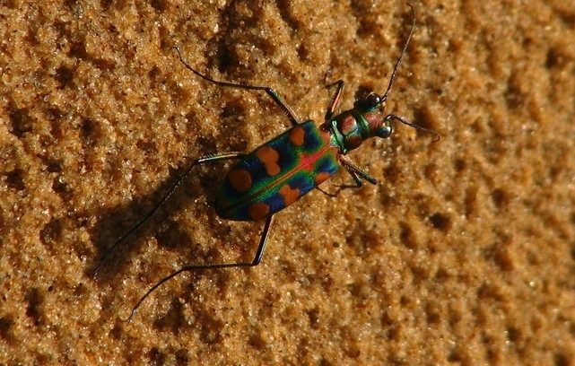

आठ-चित्तीदार बाघ भृंगEight-spotted Tiger Beetle
Cicindela octonotata · Carabidae · INS-0235

- Scientific name वैज्ञानिक नाम
- Cicindela octonotata Wiedemann, 1819
- Family कुल
- Carabidae
- Hindi हिंदी
- आठ-चित्तीदार बाघ भृंग
- Local names स्थानीय नाम
- eight-spotted tiger beetle, ath-chittidar bagh bhrung, cicindela octonotata, eight spotted tiger beetle
- Status here यहाँ की स्थिति
- native
- Movement आवागमन
- Resident, here all year
- Known from कहाँ दर्ज
- Others have published records from the wider Awadh–Purvanchal plain, none yet from Basti–Ayodhya अवध–पूर्वांचल से दूसरों के प्रकाशित अभिलेख, बस्ती–अयोध्या से अभी नहीं
- IUCN IUCN
- not evaluated
- Review समीक्षा
- not yet reviewed
When to look कब देखें
Present all year. साल भर मौजूद।
Tell it apart from इनसे अलग पहचानें
आठ-चित्तीदार बाघ भृंग / Eight-spotted Tiger Beetle
Cicindela octonotata Wiedemann, 1819 — Carabidae
आठ-चित्तीदार बाघ भृंग — नदियों के रेतीले किनारों पर धूप में बहुत तेजी से दौड़ने वाला एक बड़ा और फुर्तीला शिकारी कीड़ा। इसके पंखों (एलीट्रा) पर धातु जैसी नीली-हरी और तांबई चमक होती है और कुल मिलाकर आठ गोल पीले-सफेद धब्बे सजे होते हैं। इसके जबड़े बहुत बड़े और तेज होते हैं, जिनसे यह रेत पर रेंगने वाले नन्हे कीड़ों को झपटकर मार डालता है।
Quick Identification त्वरित पहचान
| Feature | Description |
|---|---|
| Habit | Large, sun-loving predatory ground beetle running swiftly over sand |
| Coloration | Brilliant metallic greenish-blue, bronze, or coppery above |
| Elytra | Each wing cover ornamented with four distinct creamy-yellow spots (eight in total) |
| Mandibles | Very large, sickle-shaped, sharply toothed with white basal markings |
| Eyes | Exceptionally large, bulging laterally, affording 360-degree vision |
Field tip: Walk along undisturbed sandy banks of the Ghaghara or Kuwana rivers on sunny mornings, watching for fast-running metallic beetles that fly short distances when approached.
हिंदी — कैसे पहचानें: धातु जैसी नीली-हरी चमक, पंखों पर आठ गोल पीले धब्बे, बड़ी उभरी आंखें, और रेत पर बिजली की तरह दौड़ना।
Morphology आकारिकी
Measurements from Fowler (1912):
| Measurement | Value | Source |
|---|---|---|
| Body length | 20–25 mm | Fowler (1912) |
Adult description: One of the largest and most robust Indian tiger beetles. Head broad, striate between the large prominent eyes; clypeus and labrum metallic blue-green, labrum transverse with a median tooth. Mandibles elongate, strongly curved, armed with three sharp internal teeth. Pronotum quadrate, slightly narrowed behind, transversely rugulose with deep transverse sulci, metallic coppery or greenish-bronze. Elytra broad, parallel-sided, punctate-granulate, featuring rich metallic reflections ranging from coppery-purple to deep peacock-blue.
Maculation: Each elytron bears four distinct, rounded or slightly ovate creamy-yellow or whitish maculae: humeral, subhumeral, medial, and subapical, creating eight spots across the dorsal surface.
Legs: Extremely long and cursorial; metallic blue-green with slender tibiae and long spinose tarsi adapted for high-speed locomotion over shifting sand.
हिंदी: इसकी लंबाई 20 से 25 मिमी होती है। इसका रंग बहुत चमकदार तांबई और नीला-हरा होता है। इसके जबड़े दरांती जैसे मुड़े और दांतेदार होते हैं। टांगें बहुत लंबी और दौड़ने के अनुकूल होती हैं।
Behaviour & Ecology व्यवहार और पारिस्थितिकी
Cicindela octonotata is strictly diurnal and heliophilic. Adults become active only when the morning sun heats the river sand to optimal thermal levels.
They forage by executing rapid sprint-and-stop sequences across wet or dry sand. Their sprinting speed is among the fastest recorded for terrestrial insects relative to body size; during maximum acceleration, visual processing temporarily blurs, requiring brief pauses to relocate prey. Flight is swift, low, and agile, covering several metres before the beetle lands facing the pursuer.
Larvae dwell in vertical cylindrical burrows dug in compacted sandy soil along river margins. The larva uses its flattened head and pronotum as a living trapdoor to plug the entrance, ambushing passing small ants and flies.
हिंदी: यह कीड़ा केवल तेज धूप में सक्रिय होता है। यह रेत पर बहुत तेज दौड़ता है, फिर अचानक रुककर शिकार ढूंढता है। खतरा होने पर यह तुरंत उड़कर थोड़ी दूर जाकर मुड़कर बैठता है।
Life Cycle / Phenology जीवन चक्र
| Season / Month | Stage & Activity |
|---|---|
| April–May (Summer) | Adults emerge on exposed sandy riverbanks during peak sunshine |
| June–July (Monsoon onset) | Mating occurs; females deposit eggs in moist sand depressions |
| August–September | Larvae construct burrows on elevated sandbars above regular flood levels |
| October–November | Larvae complete development through three instars before seasonal cooling |
| December–March (Winter) | Overwintering primarily as mature larvae or diapausing adults in deep soil |
Northern Indian riverine populations exhibit an annual univoltine cycle, synchronized with seasonal river water level fluctuations and flood regimes.
हिंदी: गर्मियों में रेत गर्म होते ही यह कीड़ा बाहर आता है। बरसात से पहले मादा नम रेत में अंडे देती है। इसकी इल्ली रेत में गहरा बिल बनाकर रहती है और जाड़ों में जमीन के अंदर विश्राम करती है।
Host Plants or Prey आहार
- Adult Prey: Small cursorial invertebrates, including springtails, rove beetles, small ants, dipteran flies, and spiderlings.
- Larval Prey: Surface-crawling ants, small beetles, and riverine insects passing within striking distance of the burrow mouth.
- Vegetative Associations: Strictly non-herbivorous; relies on riverine vegetation like Tamarix dioica and munja grass solely for microclimatic windbreaks.
हिंदी: यह पूरी तरह से मांसाहारी शिकारी कीट है। यह रेत पर चलने वाली चींटियों, छोटे भृंगों और मक्खियों को पकड़कर खाता है। यह पौधों को नहीं खाता।
Predators / Natural Enemies शत्रु
- Avian Predators: Plovers, wagtails, sandpipers, and Black Drongo hunt adults along river margins.
- Invertebrates: Robber flies (Asilidae) catch flying tiger beetles in mid-air; ground-hunting wolf spiders ambush resting adults.
- Parasitoids: Methochid tiphiid wasps enter larval burrows to parasitize subterranean grubs.
हिंदी: नदी किनारे रहने वाली बगुले, टिटहरी और छोटी चिड़ियां इन्हें खाती हैं। शिकारी मक्खियां इन्हें हवा में ही पकड़ लेती हैं।
Agricultural / Human Relevance कृषि प्रासंगिकता
- Beneficial predator: Acts as an efficient top invertebrate predator in riverine ecosystems, suppressing fly and pest populations along floodplain borders.
- Bioindicator of river health: Highly sensitive to riverbed sand mining, chemical pollution, and artificial embankment construction, serving as an indicator of healthy riparian corridors.
- Ecotourism value: Its dazzling metallic sheen and rapid sprint make it a popular flagship insect for citizen naturalists.
हिंदी: यह नदी के किनारे हानिकारक कीड़ों को खाकर नियंत्रण में रखता है। नदियों से अवैध बालू खनन और प्रदूषण होने पर यह कीड़ा सबसे पहले गायब हो जाता है, इसलिए यह नदी के स्वास्थ्य का सूचक है।
Expected Locally स्थानीय रूप से अपेक्षित
Not a field record. Written from published accounts for eastern Uttar Pradesh. No confirmed local sighting yet — if you have seen it, that is what the atlas needs.
अभी तक स्थानीय पुष्टि नहीं। यह विवरण प्रकाशित स्रोतों से है, किसी अवलोकन से नहीं।
Expected along the broad sandy shores, emergent bars, and floodplain margins of the Ghaghara, Rapti, and Kuwana rivers across Basti, Ayodhya, and Sant Kabir Nagar. GBIF holds published records from the wider Awadh–Purvanchal plain, none yet from Basti–Ayodhya. A first local record would be a clear photograph showing the dorsal eight-spotted pattern against sand, submitted with date and locality through the About page.
Distribution वितरण
Global range: Native to South Asia, recorded from India, Pakistan, Nepal, and Bangladesh.
In India: Distributed across the Indo-Gangetic river system, Assam, and northern river basins (Fowler 1912).
In Uttar Pradesh: Distributed along major river sandbars across the Terai and Gangetic alluvial plains.
In Basti district / eastern UP: Expected along the Ghaghara riverbed south of Ayodhya and the sandy banks of the Kuwana.
हिंदी: यह पतंगा भारत, पाकिस्तान और नेपाल की बड़ी नदियों के रेतीले किनारों पर पाया जाता है। उत्तर प्रदेश की घाघरा, राप्ती और गंगा नदी की रेती में इसकी उपस्थिति है।
Research Questions शोध प्रश्न
- How does commercial river sand mining in Basti impact local Cicindela octonotata breeding density? / बस्ती में नदियों से बालू खनन का इस बाघ भृंग की संख्या पर क्या असर पड़ता है?
- What thermal substrate temperature triggers maximum sprint velocities across alluvial sand? / नदी की रेत का तापमान कितना होने पर यह कीड़ा सबसे तेज दौड़ता है?
- What is the primary prey composition captured by adults along the Ghaghara sandbars? / घाघरा के रेतीले किनारों पर यह कीड़ा मुख्य रूप से किन जीवों का शिकार करता है?
- How do seasonal monsoon flood surges influence larval survival in sandy embankments? / बरसात में नदी की बाढ़ आने पर रेत के बिलों में रहने वाले बच्चों पर क्या प्रभाव पड़ता है?
- Can village children spot this metallic beetle running on the sand from several paces away? / क्या ग्रामीण बच्चे रेत पर चमकते हुए इस कीड़े को दूर से दौड़ते हुए आसानी से देख सकते हैं?
Similar Species मिलती-जुलती प्रजातियाँ
| Species | How to tell apart | हिंदी |
|---|---|---|
| Cicindela sexpunctata | Smaller; possesses six yellowish spots rather than eight on the elytra | छोटा आकार, पंखों पर आठ की जगह छह पीले धब्बे |
| Two-coloured Tiger Beetle (Cicindela bicolor) | Elytra uniformly metallic blue or green without pale spots; head/thorax coppery | पंखों पर कोई धब्बा नहीं होता, सिर और सीना तांबई |
| Six-spotted Ground Beetle (Anthia sexguttata) | Much larger, velvety black with six bold white spots; flightless; terrestrial | बहुत बड़ा, मखमली काला शरीर जिस पर छह सफेद धब्बे |
Field rule: A large metallic coppery-blue tiger beetle on river sand with four bold creamy-yellow spots on each elytron (eight in total) identifies Cicindela octonotata.
Taxonomy & Classification वर्गीकरण
Original description. Described by Christian Rudolph Wilhelm Wiedemann in 1819 as Cicindela octonotata in Zoologisches Magazin, 1(3), pp. 157–184.
Subspecies. Monotypic across the northern Indian river basins; no subspecies are recognized.
Family and order placement. Placed in the ground beetle family Carabidae, subfamily Cicindelinae (tiger beetles), in the order Coleoptera.
IUCN status rationale. Not evaluated on the IUCN Red List; widely distributed along major river drainage systems across northern South Asia.
हिंदी: क्रिश्चियन विडेमान ने 1819 में इसका पहला वैज्ञानिक विवरण दिया था। यह कैराबिडी कुल और सिसिंडेलिनी उपकुल का सदस्य है।
Photo Gallery फोटो गैलरी
No photos yet — add field photos to media/species/eight_spotted_tiger_beetle/ and run node scripts/sync_photos.js.
Photos needed आवश्यक फोटो
- [ ] Adult running actively over river sand in bright sun (धूप में रेत पर दौड़ता वयस्क भृंग)
- [ ] Close-up showing mandibles and dorsal eight-spotted pattern (जबड़ों और आठ धब्बों का क्लोज-अप)
- [ ] Larval burrow entrance on sandy bank (रेत पर बने बिल का मुहाना)
References संदर्भ
- Wiedemann, C.R.W. (1819). Neue Käfer aus Bengalen und Java. Zoologisches Magazin, 1(3), pp. 157–184.
- Fowler, W.W. (1912). The Fauna of British India, including Ceylon and Burma: Coleoptera: General Introduction and Cicindelidae and Paussidae, p. 376. Taylor and Francis, London.
- Acciavatti, R.E. & Pearson, D.L. (1989). The tiger beetle genus Cicindela (sensu lato) of India and adjacent regions. Annals of Carnegie Museum, 58, vol. 58.
- Pearson, D.L., Wiesner, J., Acciavatti, R.E., Uniyal, V.P. & Anichtchenko, A. (2020). A Field Guide to the Tiger Beetles of India: Identification and Biology of the Cicindelidae. Bishen Singh Mahendra Pal Singh, Dehradun.
- Andrewes, H.E. (1930). Catalogue of Indian Insects: Part 18, Carabidae. Government of India, Calcutta.
- GBIF Occurrence Data — Cicindela octonotata Wiedemann, 1819, India (2025).
Source file: species/fauna/insects/eight_spotted_tiger_beetle.md